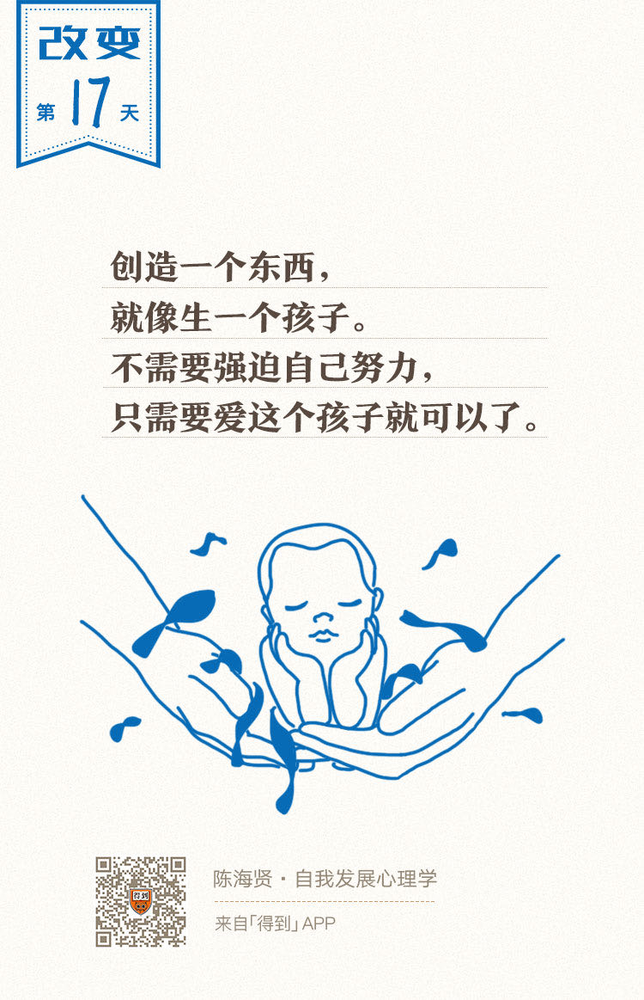

欢迎来到《自我发展心理学》。
你好，我是陈海贤。
如果把思维比喻成一条河流，一条河要流动起来，需要有3个条件：
- 河流落差产生的张力；
- 控制河流走向的河道；
- 不断补充的源头活水。
如果没有落差，河水就会停止流动；如果没有河道，河水就会失去方向；如果没有源头活水，河水很快就会枯竭。
其实，人的思维发展也是如此。张力就是目标，河道就是行动的方法，源头活水就是与现实的接触。
如果没有目标，人就不会有行动的张力；如果没有方法，目标就只会制造焦虑，而不会引发有效的行动；如果没有跟现实的接触，思维就会变成头脑中僵固的规则，而不会有什么发展。
所以，我们的课程也会从目标、方法和与现实的接触三个方面来讲怎么发展自己的思维。今天我们先来讲讲目标和张力。
什么样的思维，能够产生持续行动的张力呢？对改变而言，经常会遇到一个问题，就是改变很难持久。
曾有一个读者写信跟我讨论改变的事。她已经颓废了一段时间，为了让自己不那么颓废，有一天，她发誓要改变自己。
她说：“当天，我就制定了满满的计划，一项项高效率地完成了。第一天，我很开心。第二天下午，我觉得有点累，没有完成当天的任务，我很沮丧。第三天，我又开始拖延，当天一项任务都没有完成。第四天，我开始思考这么做有什么意义——我的生活就是不断完成任务的过程吗？这些无趣的任务又有什么意义。
哦，意义。看来我缺少一点价值感，一点奋斗的理由，一点梦想。于是，我花了很长的时间思考诸如‘我的梦想是什么？’、‘我活着是为了什么？’这样的问题，我开始关心起人生的意义来。”
我觉得这个读者对人生意义的寻求也不会帮她走出怪圈，而会变成又一轮颓废、拖延、沮丧和振作的开始。
也许你也经历过这样的循环：打满鸡血、一鼓作气、再而衰、三而竭，最后又回到了颓废的状态，等着下一次再打满鸡血。这样的循环多了，就算有了动力，我们也会怀疑，改变是否可能。
那么，这个读者的问题在哪里呢？
也许你想到了，她需要有一个目标。但其实这个读者也是有目标的，她的目标就是“我不想让自己这么颓废”。所以她去思考梦想和意义的话题，就只是为了让自己不那么颓废。
可是，这个目标为什么没能给她带来持续的动力呢？
创造才能制造持续的张力
我很喜欢的一本书叫《最小阻力之路》，作者罗伯特·弗里茨（Robert Fritz），他原来是个作曲家，后来根据自己的创作经验，开始开发创造力课程。
在这本书里，作者区分了两种产生张力的结构：创造的结构和解决问题的结构。他说：
创造的结构是怎么样的呢？
就像画家想画一幅画，作曲家想作一首曲子。他有一个确切的东西想要把它做出来，这就是创造的结构。
反之，如果你用的不是创造的结构，而是解决问题的结构，那么你就会陷入像刚刚我们所说的读者所面对的那种困境。
她的目标是“别这么颓废了”。可是，她的动力不是来自于她的目标——她前面并没有类似完成一幅画这样确切的东西。她的动力来自问题本身带来的焦虑。
只要她的努力一有成效，焦虑就会缓解，焦虑带来的张力就会消失，张力一消失，她努力的动力就会减少，直到问题重新让她变得焦虑，这种张力才会重新积聚起来。所以才出现了从打鸡血到颓丧的不断循环。
怎样才能打破这种循环呢？
一些人想到的策略，是拼命夸大问题的严重性，通过谴责自己，制造焦虑，以获得动力——只要问题在，那动力也总会在。
所以稍有懈怠，他们就会恶狠狠地对自己说类似“问题已经很严重了，如果你再不改变，就完蛋了。”之类的话。
可是，当他们这么做，在强化动力的同时，也强化了问题本身。为了保留这种动力，他们不敢让问题好转，只能让自己变得越来越悲观。
所以，也许有些人也取得了外人看来挺成功的学业或事业，但从内心里，他们并不敢认同和享受这些成功。他们需要“问题”和“挫折”作为动力，持续鞭策他们往前走。这样的结构显然不能持久。
而创造型思维制造张力的方式，却非常不同。
以我自己为例。有一段时间，我一直有拖延的毛病，我很不喜欢这种拖拖拉拉的感觉。
为了治好自己的拖延症，我还专门写了一本小书叫《拖延症再见》。前段时间，我打算写《拖延症再见2》，因为我发现自己的拖延症还没好。
可正当我要动笔的时候，我的拖延症忽然不治而愈了。
是我找到了治疗拖延症的秘方吗？不是。是因为我开始准备这门《自我发展心理学》的课了，就是你现在听到的这门课。
从我构思这门课开始，它就变成了我心里一个很重要的未完成事件。我读书、收集资料，我的脑子里都在想它。我变得紧张又有效率。
这跟我凭空想怎么克服拖延症的办法，是非常不同的。如果让我凭空努力，哪怕我想出再多克服拖延症的方法，也不会有效。
为什么创造型的思维会产生足够的张力？《最小阻力之路》的作者，给出了一个意料之外，又是情理之中的答案。他说，是因为爱。
我觉得是有道理的。因为当这门课还只是我脑子里的一个构思、一个念头的时候，我就很爱它。因为这门课里有我关心的问题，有我想讲给你听的东西，我有足够的张力把它从一个理念变成现实。
想要把它完成的冲动，变成了一种持续的张力。这种张力不会让我三天打鱼两天晒网，只要我没完成它，这种张力就会持续存在。
你越是爱它，越是希望它问世。这种张力就越大，它就越会推动你持续行动，直到最终把它完成。这就是创造的思维结构带来的张力。
从大的方面来说，我们也可以把人生看作是一个创造的过程，是把我们心里钟爱的理念变成现实的过程，而不是解决问题的过程。
当然，这并不是说我们不需要解决问题了，为了完成梦想，你需要解决很多的问题，但是解决问题不应该成为行动的动力。你真正热爱的目标才是这个动力的来源。
创造型思维和解决问题思维的根本区别
创造型思维把事情分成了简单的两部分：
第一个部分，是我想要完成的作品。
第二个部分，是我所面临的现实。
前面我们谈了第一个部分，下面我们来谈谈我们与现实的关系。
也许你会想，我也想有自己的目标，我也想去实现自己的梦想，可是我所在的现实不允许该怎么办呢？
很多人都有过这样的疑问。曾有个朋友来咨询我，说他想去从事研究工作，可是他现在经济有困难，没法继续去读书深造，只能做一个他不那么想做的工作。
暂时没钱去追求梦想，这就是一个事实。
创造的思维并不是让我们忽略现实，相反，只有正视现实，才能实现自己想要创造的东西。相反，创造型思维会让我们用一种不同的目光去看待现实。
创造型的思维，会把这个事实看作是创造的条件限制。如果我遇到了这样的限制，我就要想办法去解决它。而解决问题思维会把这个限制看作是目标是否成立的前提。如果我遇到这种限制，那也许我就该放弃目标。这是两者的区别。
一个创造型思维的人可能会想：“我想要继续去读书深造，可是我现在确实没钱，怎么才能实现我读书深造的目标呢？如果钱真是我创造的前提条件，那我要先去挣钱。”
当他在挣钱的时候，他是知道自己为什么这么做的。
可是一个解决问题思维的人就会想：“现在我连钱都没有，还谈什么读书深造，这压根就不现实。于是他就放弃了自己的目标。”
这就是创造型思维和解决问题思维的根本区别。
创造型思维是以目标来思考现实，先想我要什么，再想现实是怎么样的，环境能够提供什么，再去想办法弥补目标和现实之间的鸿沟。
而解决问题思维是以现实来思考目标。先去想环境能够提供什么，再来想自己的目标是不是实际的，该树立怎么样的目标。
大部分人都是从现实出发去思考问题，而不是从想要的东西来思考现实。当他们这么想的时候，自然无法突破现实的限制，也就没有持续的张力了。
说到这里，我们要回过头来总结今天的课了。
今天我们讲了，只有创造型思维才能产生持续行动的张力。创造型目标制造了张力，而张力能够产生持续行动的动力，帮助我们去有效地应对和组织现实。
打一个比方，创造一个东西就像生一个孩子。生孩子的过程，并不需要你强迫自己努力，你只需要爱这个孩子就可以了。
另一方面，创造也需要我们去认清现实、加工现实，而不是逃避现实。
创造型思维为我们制造了张力，但是怎么把这种张力变成我们持久的行动力呢？下节课我们来讲讲这个问题。
我们下一讲再见。
